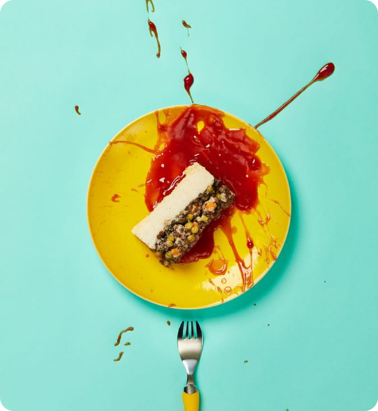
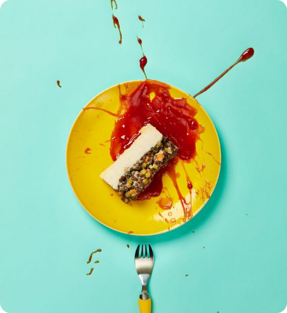

Things I Do

Strategy
There’s no style over substance here. I bring together form and the function to create something that looks good and performs brilliantly. Simple.
Information
It’s about organizing the content and flow of a website based on research and planning. Eventually I come up with a structure/design that balances the users’ desires with the business’s needs.


Development
As a designer and developer, I understand the perfect user interface should look good and work even better. Alongside my clients, I uncover problems and solve them. In short, I create bolder online experiences.
 
